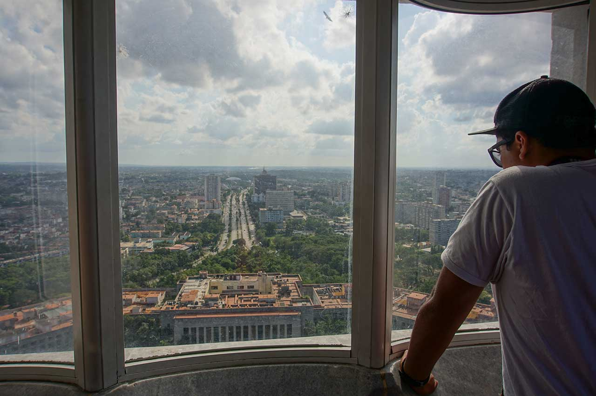

Creador, realizador y gestor
de proyectos en comunicación,
educación, desarrollo web,
Cine y Audiovisuales
Soy Comunicador Social egresado de la Universidad del Cauca. Ahí descubrí el impacto de esta ciencia en la vida de los seres humanos y la considero una herramienta de construcción social en nuestro territorio. Diseño estrategias comunicativas que visibilizan procesos, historias, productos, organizaciones e instituciones.
Pregúntame cómo podemos comunicar tu idea y hacer equipo.
CINECULTIVO ESTUDIO es la corporación que fundamos junto a un equipo de amigos y talentos con quienes compartimos el sueño de hacer cine y audiovisual desde una perspectiva comunitaria.
Visita www.cinecultivo.com, conoce nuestro trabajo y anímate a realizar con nosotros.
Estoy convencido que la educación es el camino que debemos seguir para mejorar el mundo y alcanzar el buen vivir. Conoce nuestro proyecto educativo donde construimos el colegio donde nos gustaría estudiar: www.celm.edu.co
Integrar la necesidad de aprendizaje continuo con mi pasión por la tecnología, la comunicación, el cine y la educación es posible gracias a la programación y el desarrollo web, que llegó a mi vida para explorar nuevos horizontes académicos y ahora es un pilar fundamental de mi quehacer.
Hablemos, estoy seguro que podemos hacer realidad proyectos geniales.
{kind=link}